Video resources
Learn through watching
Curated videos covering sign language, assistive communication, and disability awareness.
ASL Alphabet – Sign Language for Beginners
A clear, slow-paced walkthrough of every letter in the American Sign Language alphabet — perfect for first-time learners.
Learn Basic Sign Language in 20 Minutes
Covers greetings, numbers, and everyday phrases in sign language. Great for family members and caregivers of Deaf persons.
Introduction to Braille
Learn how the Braille system works — the six-dot cell, Grade 1 alphabet, and how visually impaired people read and write.
Understanding Different Disabilities
An accessible overview of physical, sensory, cognitive, and invisible disabilities — ideal for caregivers and community members.
Augmentative & Alternative Communication (AAC)
Explains tools like picture boards, speech devices, and apps that help people with speech impairments communicate effectively.
How to Communicate with a Deaf Person
Practical tips on face-to-face communication, lip reading etiquette, writing notes, and respectful interaction with Deaf individuals.
Sign language
The Sign Language Alphabet
All 26 letters of the manual alphabet (fingerspelling) used in International / American Sign Language.
| Letter | Hand Sign | Description |
|---|---|---|
| A | 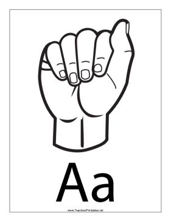 |
Closed fist, thumb resting on the side |
| B | 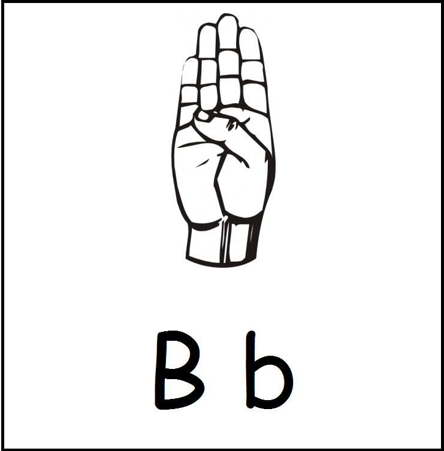 |
Flat hand, four fingers together, thumb tucked in |
| C | 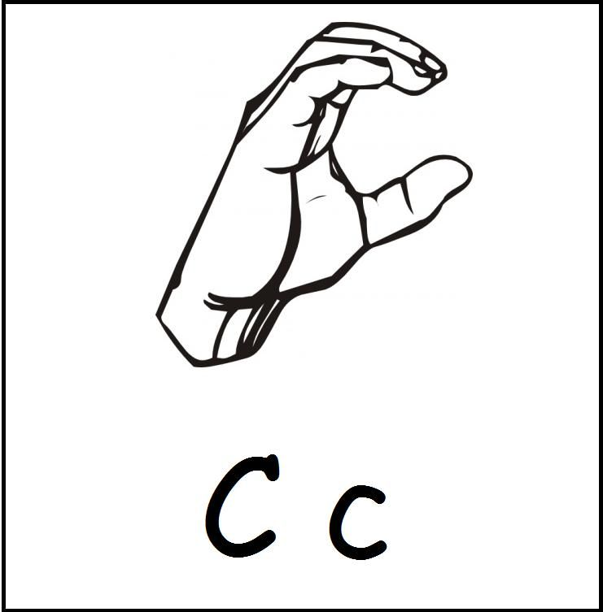 |
Curved hand forming a C shape |
| D | 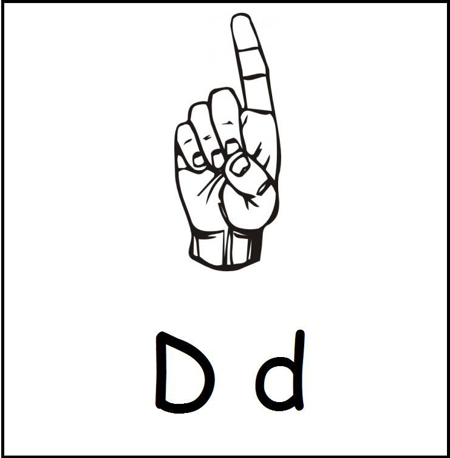 |
Index finger points up, other fingers curve to meet thumb |
| E | 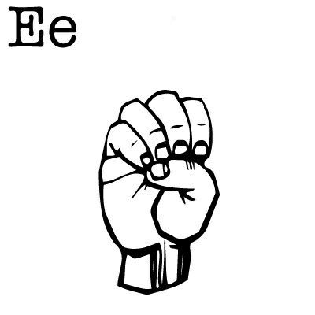 |
All fingers bent down to touch the palm |
| F | 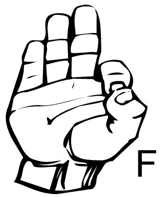 |
Index and thumb form a circle, other three fingers point up |
| G | 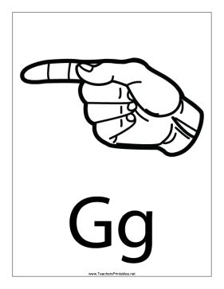 |
Index finger and thumb point sideways, parallel to the ground |
| H | 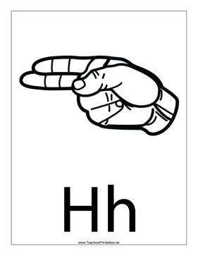 |
Index and middle fingers held together, pointing sideways |
| I | 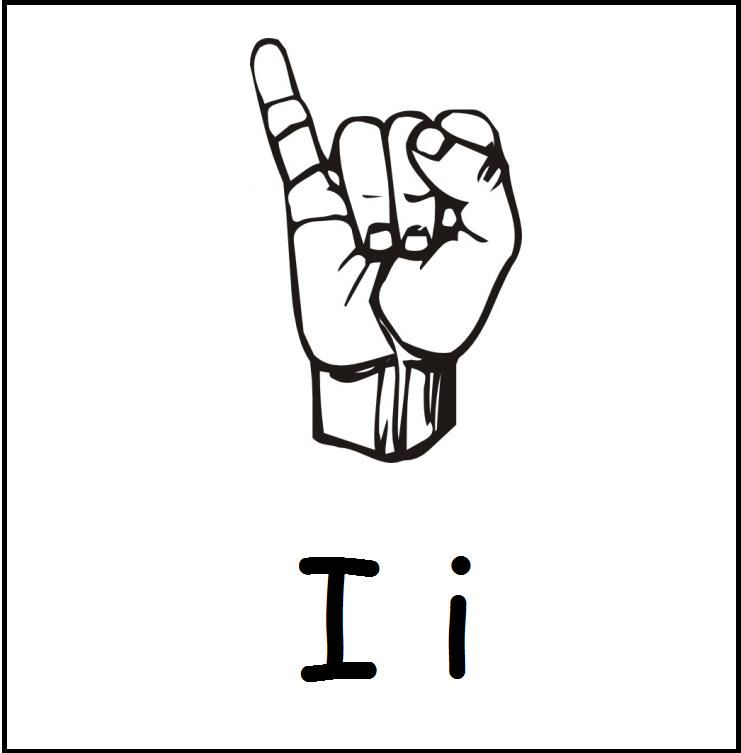 |
Pinky finger extended upward, other fingers closed |
| J | 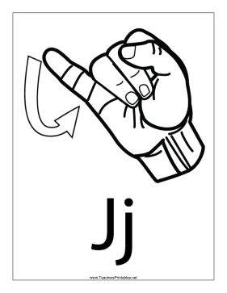 |
Pinky up, then trace a J shape in the air |
| K | 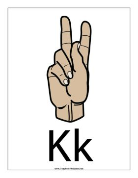 |
Index and middle fingers up, thumb between them |
| L | 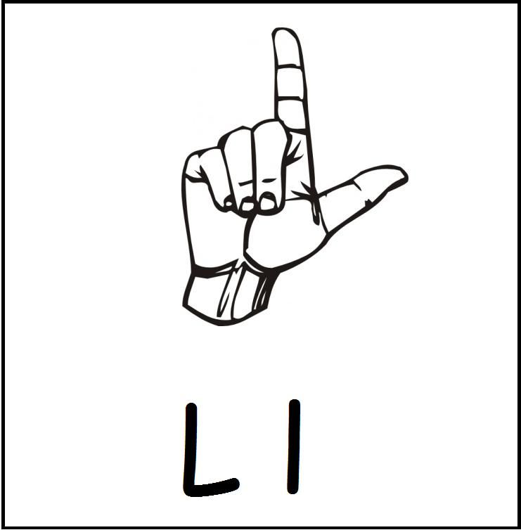 |
Thumb and index finger extended to form an L shape |
| M | 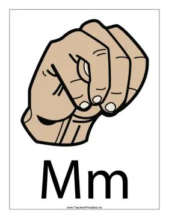 |
Three fingers folded over the thumb |
| N | 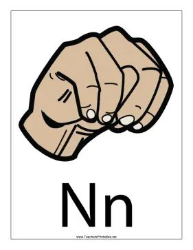 |
Two fingers folded over the thumb |
| O | 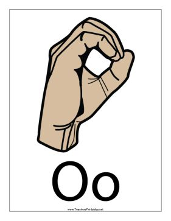 |
All fingers curve down to meet the thumb, forming an O |
| P | 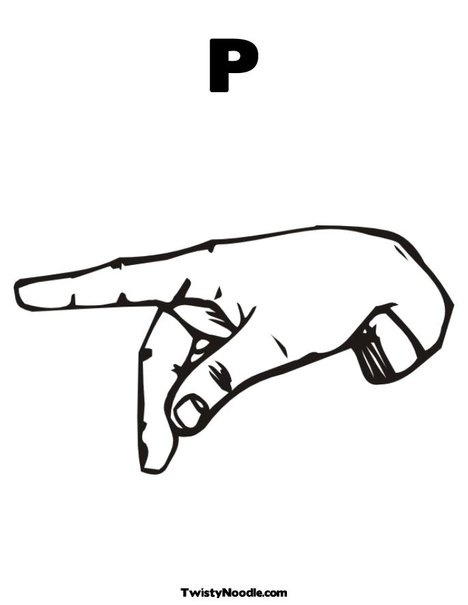 |
K handshape rotated to point downward |
| Q | 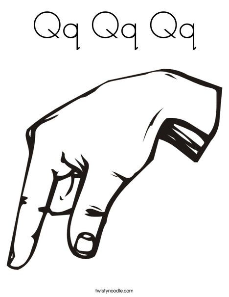 |
G handshape rotated to point downward |
| R | 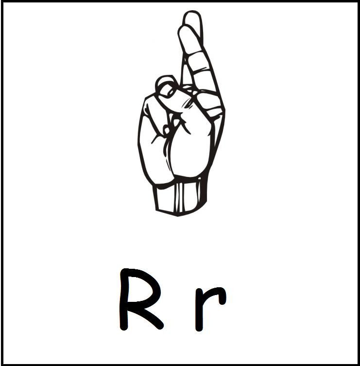 |
Index and middle fingers crossed over each other |
| S | 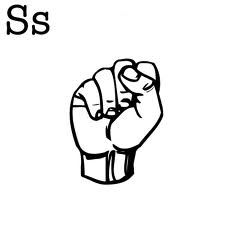 |
Closed fist with thumb resting over the fingers |
| T | 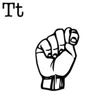 |
Thumb tucked between the index and middle fingers |
| U | 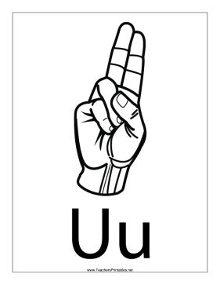 |
Index and middle fingers held together, pointing upward |
| V | 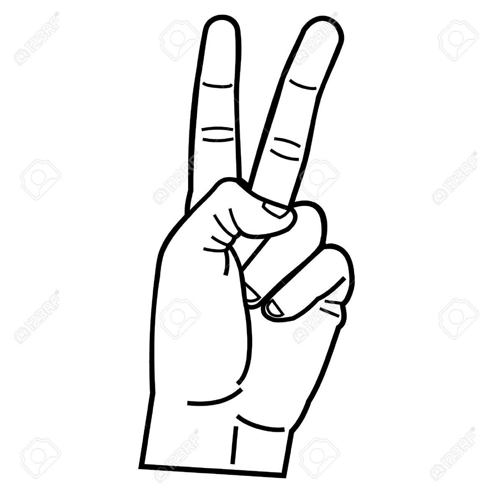 |
Index and middle fingers spread apart, forming a V |
| W | 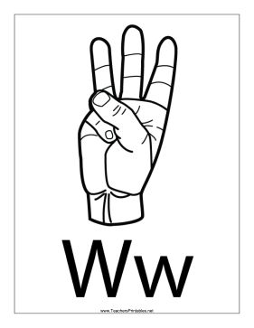 |
Index, middle, and ring fingers spread upward |
| X | 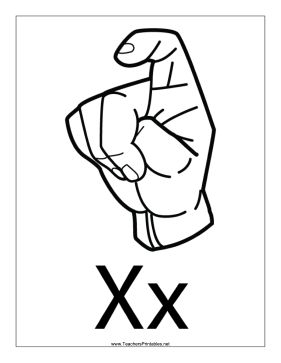 |
Index finger bent into a hook shape |
| Y | 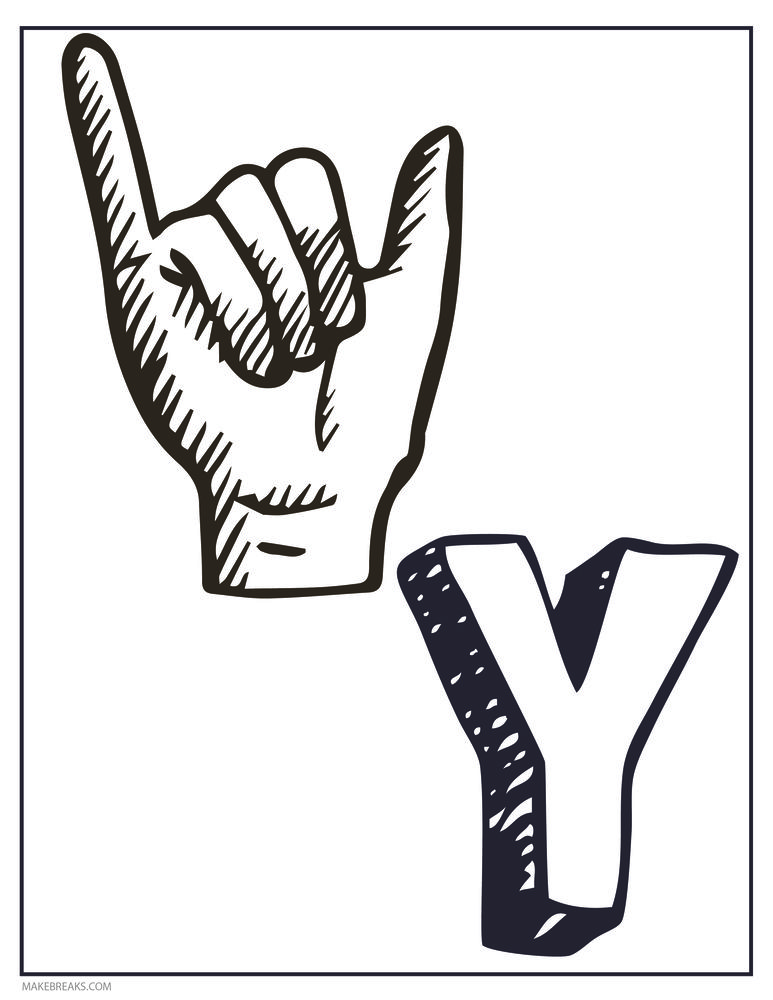 |
Thumb and pinky finger extended outward |
| Z | 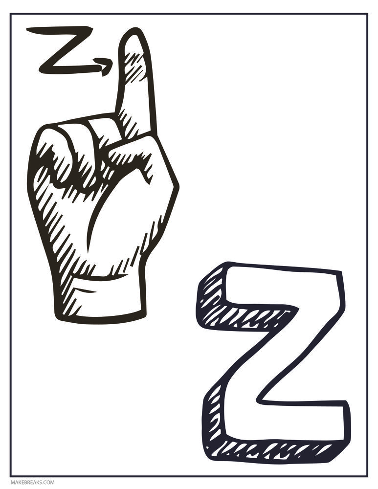 |
Index finger traces a Z shape in the air |